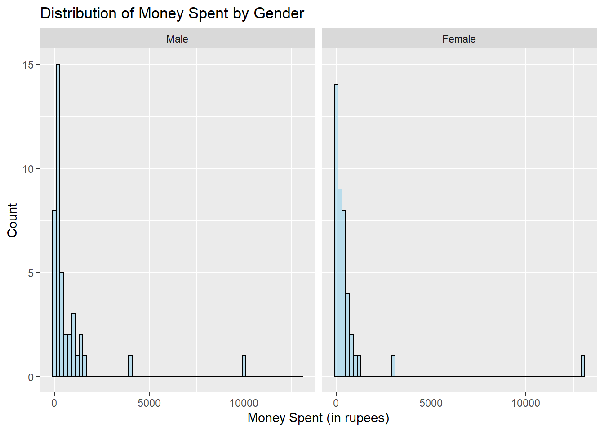
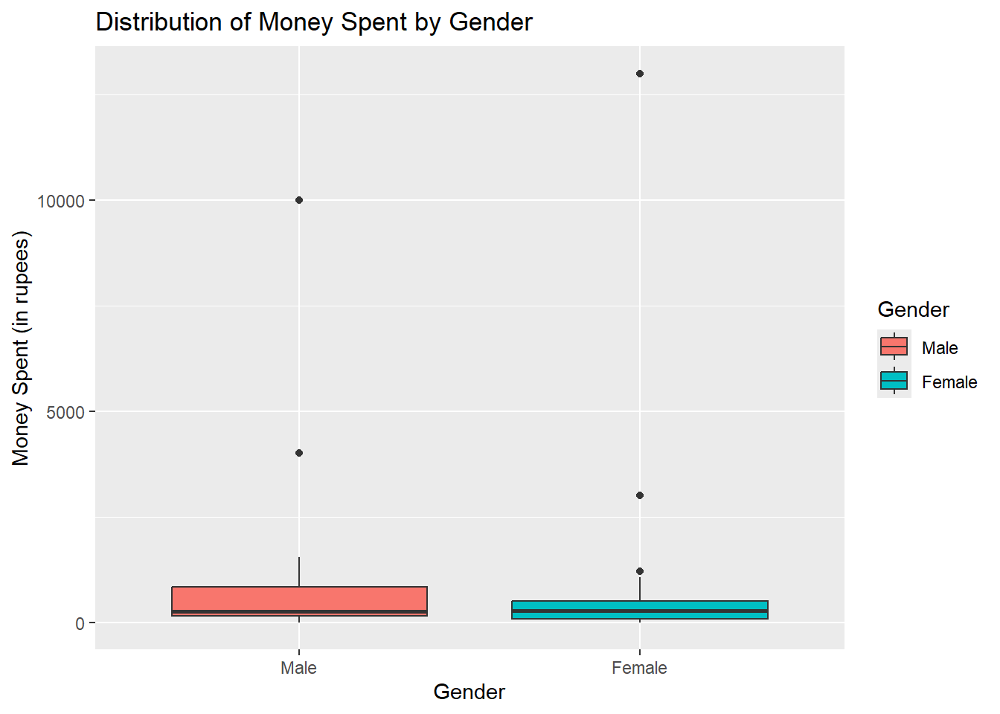
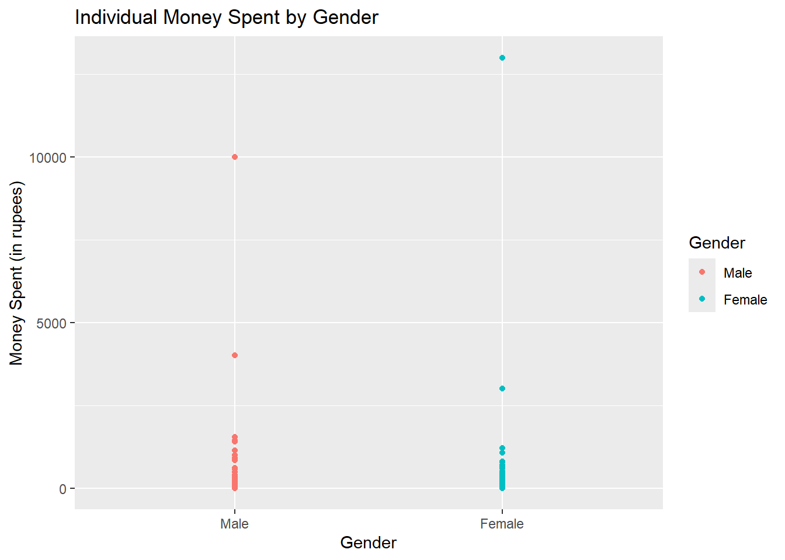
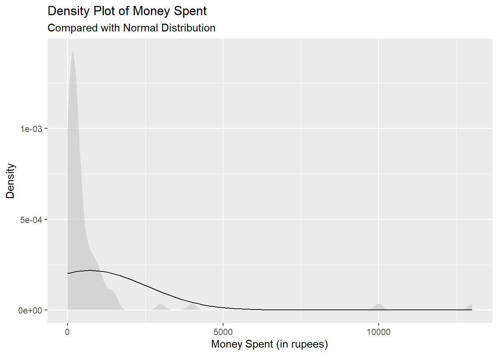
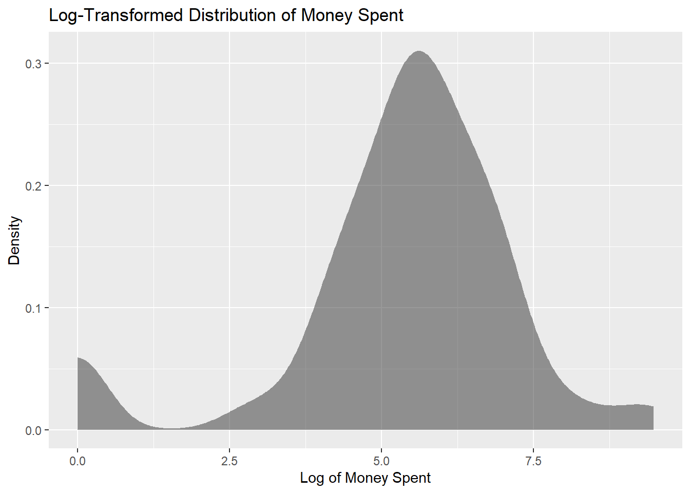
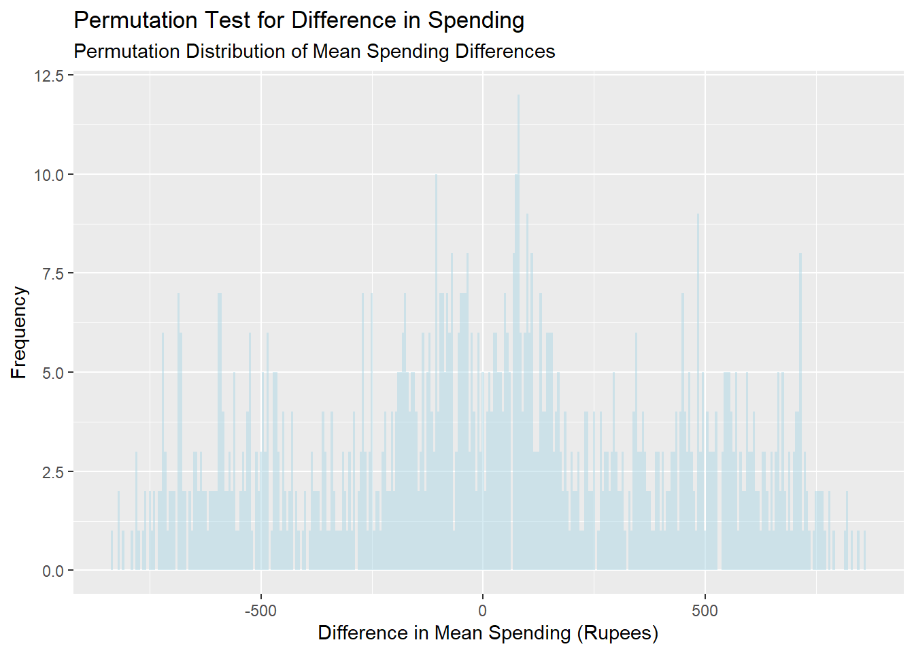

We are investigating spending behaviour between genders.
library(tidyverse)
── Attaching core tidyverse packages ──────────────────────── tidyverse 2.0.0 ──
✔ dplyr 1.1.4 ✔ readr 2.1.5
✔ forcats 1.0.0 ✔ stringr 1.5.1
✔ ggplot2 3.5.1 ✔ tibble 3.2.1
✔ lubridate 1.9.3 ✔ tidyr 1.3.1
✔ purrr 1.0.2
── Conflicts ────────────────────────────────────────── tidyverse_conflicts() ──
✖ dplyr::filter() masks stats::filter()
✖ dplyr::lag() masks stats::lag()
ℹ Use the conflicted package (<http://conflicted.r-lib.org/>) to force all conflicts to become errors
library(mosaic)
Registered S3 method overwritten by 'mosaic':
method from
fortify.SpatialPolygonsDataFrame ggplot2
The 'mosaic' package masks several functions from core packages in order to add
additional features. The original behavior of these functions should not be affected by this.
Attaching package: 'mosaic'
The following object is masked from 'package:Matrix':
mean
The following objects are masked from 'package:dplyr':
count, do, tally
The following object is masked from 'package:purrr':
cross
The following object is masked from 'package:ggplot2':
stat
The following objects are masked from 'package:stats':
binom.test, cor, cor.test, cov, fivenum, IQR, median, prop.test,
quantile, sd, t.test, var
The following objects are masked from 'package:base':
max, mean, min, prod, range, sample, sum
library(ggformula)library(crosstable)
Attaching package: 'crosstable'
The following object is masked from 'package:purrr':
compact
library(skimr)
Attaching package: 'skimr'
The following object is masked from 'package:mosaic':
n_missing
library(dplyr)library(broom)
Research Experiment to Investigate Spending Behaviour Between Genders
Objective:
The purpose of this research experiment is to investigate whether there is a significant difference in the amount of money spent between guys and girls among students at MAHE Bengaluru. The study aims to test the hypothesis that guys tend to spend more money than girls, by collecting and analyzing spending data during a specific period.
Hypothesis:
Guys spend more money on average compared to girls within a given timeframe.
Experiment Design: Data Collection:
Sample: The dataset consists of spending data from 60 students at MAHE Bengaluru, with 30 guys and 30 girls. The participants were randomly selected through coin tosses and asked to record their spending on October 23rd, 2024.
Data Sources: The data was recorded in an Excel sheet by the people conducting the experiment. Each participant reported how much money they spent on the allocated date.
Variables Measured:
Target Variable: Amount of money spent by each participant during the experiment period.
Predictor Variable: Gender (guys vs. girls)
Sampling:
Time Period: The experiment was conducted on October 24th, 2024, over a period of 1.5 hours.
Participant Selection Criteria: 30 guys and 30 girls were randomly selected by tossing a coin.
Analysis Plan:
Data Cleaning and Transformation: The data was checked for accuracy in the Excel sheet, ensuring that each participant’s spending was properly recorded and that there were no missing or erroneous entries.
Exploratory Data Analysis (EDA): Visualizations like histograms and box plots will be used to compare spending distributions between guys and girls, in order to identify any patterns or discrepancies.
Statistical Tests:
Two-Sample t-Test: A two-independent sample test for means has to be conducted to compare the average amount spent by guys and girls. This helps in determining if there is a statistically significant difference in spending behaviour between the two groups.
Permutation Test: A permutation test has to be conducted to assess the likelihood of the observed difference in spending occurring by chance, providing a non-parametric alternative to the two-sample t-test.
Descriptive Statistics: Measures like mean, median, and standard deviation have to be calculated for both groups to summarize spending behaviour.
Wilcoxon Rank-Sum Test: This is a non-parametric test that has to be conducted to compare the spending behaviour between guys and girls.( if the normality assumption is not met )
Limitations:
Sample Size: With 30 participants per gender, the results may not be generalizable to a larger population. A more extensive sample would have provided greater reliability.
Contextual Factors: The study did not account for reasons behind spending (e.g., necessities vs. discretionary purchases), which might have influenced spending patterns.
Outcome:
The analysis will reveal whether a significant difference in spending exists between guys and girls at MAHE Bengaluru. If the hypothesis holds, it would suggest that guys, on average, spend more in a limited timeframe. These findings will provide insights into gender-specific spending behaviour within this student population.
Rows: 82 Columns: 4
── Column specification ────────────────────────────────────────────────────────
Delimiter: ","
chr (2): Name, Gender
dbl (2): Sr no, Money Spent
ℹ Use `spec()` to retrieve the full column specification for this data.
ℹ Specify the column types or set `show_col_types = FALSE` to quiet this message.
spending_23rd
# A tibble: 82 × 4
`Sr no` Name Gender `Money Spent`
<dbl> <chr> <chr> <dbl>
1 1 Aagam Male 150
2 2 Aakash Male 240
3 3 Aarushi Female 382
4 4 Abheeta Female 60
5 5 Adithya Male 68
6 6 Aditya Male 300
7 7 Akanksha Female 270
8 8 Amruta Female 190
9 9 Anaaya Female 300
10 10 Anish Male 0
# ℹ 72 more rows
The table provides information on the spending behaviour of individuals on October 23rd, categorized by gender. It highlights the amount spent by 82 participants, allowing for a comparison of spending patterns between guys and girls. The data provides insight into the variability in spending amounts, as well as individual outliers, offering a basis for further analysis of gender-based financial behaviour.
The columns include a unique identifier for each participant (Sr no), their Name, Gender (male or female), and the Money Spent. The dataset contains numeric data for the money spent, with a wide range of amounts from 0 to significant expenditures, allowing for analysis of spending patterns between males and females.
Inspect - Spending Behaviour
inspect(spending_modified)
categorical variables:
name class levels n missing
1 Name character 82 82 0
2 Gender factor 2 82 0
distribution
1 Aagam (1.2%), Aakash (1.2%) ...
2 Male (50%), Female (50%)
quantitative variables:
name class min Q1 median Q3 max mean sd n
1 Sr no numeric 1 21.25 41.5 61.75 82 41.5000 23.81526 82
2 Money Spent numeric 0 100.00 264.5 596.25 13000 720.9634 1835.72169 82
missing
1 0
2 0
The gender distribution is evenly split, with no missing data in the dataset. The summary statistics for the Money Spent variable show a wide range of spending, with a minimum value of 0 rupees and a maximum value of 13,000 rupees. The median spending is 264.5 rupees, while the mean spending is 720.9 rupees, indicating that a few individuals spent significantly more than others. The standard deviation of 1,835.3 rupees reflects a high level of variability in spending behavior. These results suggest that while most participants had moderate spending, a few high spenders significantly influenced the overall average.
Skim - Spending Behaviour
skim(spending_modified)
Data summary
Name
spending_modified
Number of rows
82
Number of columns
4
_______________________
Column type frequency:
character
1
factor
1
numeric
2
________________________
Group variables
None
Variable type: character
skim_variable
n_missing
complete_rate
min
max
empty
n_unique
whitespace
Name
0
1
3
12
0
82
0
Variable type: factor
skim_variable
n_missing
complete_rate
ordered
n_unique
top_counts
Gender
0
1
FALSE
2
Mal: 41, Fem: 41
Variable type: numeric
skim_variable
n_missing
complete_rate
mean
sd
p0
p25
p50
p75
p100
hist
Sr no
0
1
41.50
23.82
1
21.25
41.5
61.75
82
▇▇▇▇▇
Money Spent
0
1
720.96
1835.72
0
100.00
264.5
596.25
13000
▇▁▁▁▁
The key variable of interest, Money Spent, shows a mean spending of 720.96 rupees, with a high variability indicated by a standard deviation of 1,835.7 rupees. The spending ranges from 0 to 13,000 rupees, with a median of 264.5 rupees. The distribution is heavily skewed, with most participants spending below the median, but a few high spenders significantly contributing to the total amount, leading to the large spread in spending behavior.
Data Dictionary
Quantitative Data:
Money Spent (dbl): The total amount of money spent by each participant on October 23rd, recorded in Indian rupees.
Qualitative Data:
Sr no (fct): A sequential number assigned to each participant for identification purposes (treated as a categorical factor).
Name (chr): The name of the participant.
Gender (chr): The gender of the participant, categorized as either Male or Female.
Histogram - Distribution of Money Spent by Gender
gf_histogram(~`Money Spent`| Gender, data = spending_modified, binwidth =200, fill ="skyblue", color ="black") %>%gf_labs(title ="Distribution of Money Spent by Gender",x ="Money Spent (in rupees)",y ="Count" )

The histograms comparing money spent by gender reveal that both males and females exhibit a similar spending pattern, with the majority of participants spending relatively small amounts, primarily below 1,000 rupees. There is a notable concentration of individuals in both groups who spent minimal amounts (0 to 500 rupees), with a few significant outliers who spent as much as 13,000 rupees. The distribution is right-skewed for both genders, indicating that while most participants spent modestly, a few individuals in each group spent considerably more. Overall, the spending behaviour shows similar trends between males and females, with only slight variations in the frequency of higher spending outliers.
The bar chart compares the average money spent by gender, showing that both males and females have nearly identical average spending, with only a slight difference. The mean amount spent by males and females is approximately 721 rupees, indicating that, on average, there is minimal variation in spending behaviour between the two genders in this dataset. This suggests that gender does not significantly influence the average amount of money spent on October 23rd.
Boxplot - Distribution of Money Spent by Gender
gf_boxplot(`Money Spent`~ Gender, data = spending_modified, fill =~ Gender) %>%gf_labs(title ="Distribution of Money Spent by Gender",x ="Gender",y ="Money Spent (in rupees)" )

The box plot comparing the distribution of money spent between males and females shows that both genders have a similar range of spending, with most participants spending relatively low amounts. The median spending is low for both genders, as indicated by the position of the boxes. However, there are a few notable outliers in both groups, with some individuals spending significantly higher amounts, particularly around 10,000 rupees for males. These outliers create a noticeable extension in the upper range of the male box plot. Overall, the distribution suggests that while typical spending is modest, a few individuals in both groups account for much higher spending.
Scatter Plot - Individual Money Spent by Gender
gf_point(`Money Spent`~ Gender, data = spending_modified,color =~ Gender) %>%gf_labs(title ="Individual Money Spent by Gender",x ="Gender",y ="Money Spent (in rupees)" )

The scatter plot displays individual spending points for both males and females, highlighting the distribution of money spent on October 23rd. Most participants, regardless of gender, spent relatively small amounts, clustering around the lower end of the plot. However, there are noticeable outliers in both groups, with a few individuals spending significantly higher amounts—one female and one male spending close to 13,000 rupees. These outliers are clearly separated from the main group, indicating that while the general spending pattern is modest, a few individuals contribute to a much higher level of spending.
Density Plot of Money Spent
spending_modified %>%gf_density(~`Money Spent`, fill ="gray", alpha =0.5) %>%gf_fitdistr(~`Money Spent`, dist ="dnorm") %>%gf_labs(title ="Density Plot of Money Spent",subtitle ="Compared with Normal Distribution",x ="Money Spent (in rupees)",y ="Density" )

The actual spending data is highly right-skewed, with a majority of participants spending small amounts, as indicated by the sharp peak near zero. The density drops off quickly, with a long tail extending toward higher spending amounts, reflecting a few individuals who spent significantly more. The fitted normal distribution deviates from the actual data, confirming that the spending data does not follow a normal distribution, particularly due to the extreme outliers and the overall skewness. This suggests that parametric tests assuming normality may not be appropriate without data transformation. ( If the data is not normally distributed, the results could be unreliable.)
Log-Transformed Distribution of Money Spent
spending_modified <- spending_modified %>%mutate(log_money_spent =log(`Money Spent`+1))gf_density(~ log_money_spent, data = spending_modified) %>%gf_labs(title ="Log-Transformed Distribution of Money Spent",x ="Log of Money Spent",y ="Density" )

The density plot of the log-transformed spending data shows a more symmetric distribution compared to the original skewed data. After applying the log transformation, the previously right-skewed data is now centered with a peak around a log value of 4 to 5, suggesting a more normalized spread of spending behavior. While the log transformation has reduced the extreme effects of outliers and compressed the range of higher values, the data still exhibits some variation but appears more suitable for parametric testing.
The t-test
t <-t.test(`Money Spent`~ Gender, data = spending_modified, mu =0, alternative ="two.sided", conf.int =TRUE, conf.level =0.95) %>%broom::tidy()t
The results of the Welch Two-Sample t-test comparing the average money spent by males and females show a t-value of 0.13555 and a p-value of 0.8925, which is much larger than the typical significance threshold of 0.05. This indicates that there is no statistically significant difference in the mean spending between the two groups. The 95% confidence interval for the difference in means ranges from -757.07 to 867.66, further suggesting that the difference could be zero. The mean spending for males was 748.61 rupees, while the mean for females was 693.32 rupees, but this difference is not statistically significant based on the t-test results.
Wilcoxon’s Signed-Rank Test
wilcox_test <-wilcox.test(`Money Spent`~ Gender, data = spending_modified, alternative ="two.sided", conf.int =TRUE, conf.level =0.95) %>%broom::tidy()
Warning in wilcox.test.default(x = DATA[[1L]], y = DATA[[2L]], ...): cannot
compute exact p-value with ties
Warning in wilcox.test.default(x = DATA[[1L]], y = DATA[[2L]], ...): cannot
compute exact confidence intervals with ties
The Wilcoxon Signed-Rank Test results indicate that the p-value is 0.3806, which is greater than the common significance threshold of 0.05. This suggests that there is no statistically significant difference in the median spending between males and females. The test statistic is 935.5, with a 95% confidence interval for the difference in spending between groups ranging from -69.99 to 180. The estimate of the difference in ranks is 55.00, further indicating that the observed difference in spending behavior is not large enough to be statistically significant. Therefore, based on this test, we cannot conclude that there is a significant difference in spending between males and females.
Permutation Test
perm_test_result <-do(1000) *diffmean(shuffle(`Money Spent`) ~ Gender, data = spending_modified)perm_test_result
The results of the permutation test display 1,000 shuffled differences in mean spending between males and females. These differences have both positive and negative values. The negative values indicate cases where, after shuffling, the group representing females had higher average spending, while the positive values indicate that the male group had higher average spending in the shuffled data.
Plotting the results of the Permutation Test
gf_histogram(~ diffmean, data = perm_test_result, fill ="lightblue", binwidth =5) %>%gf_labs(title ="Permutation Test for Difference in Spending",subtitle ="Permutation Distribution of Mean Spending Differences",x ="Difference in Mean Spending (Rupees)",y ="Frequency" )

The plot of the permutation test results shows the distribution of 1,000 differences in mean spending between males and females after randomly shuffling group labels. The differences range from approximately -350 to +800 rupees, with the most frequent differences clustering around zero. This suggests that, under random shuffling, the difference in mean spending is often small and distributed symmetrically around zero, indicating no strong directional bias between the two groups.
The observed difference in means
observed_diff <-diffmean(`Money Spent`~ Gender, data = spending_modified)observed_diff
diffmean
-55.29268
The observed difference in mean spending between males and females is approximately -55.29 rupees, indicating that, on average, females spent slightly more than males. This negative value suggests a small difference in spending behaviour, but it is relatively modest.
Calculating the p-value
p_value <-prop(~ (abs(diffmean) >=abs(observed_diff)), data = perm_test_result)p_value
prop_TRUE
0.889
The permutation test resulted in a p-value of 0.871, indicating that there is an 87.1% probability that the observed difference in mean spending between males and females (approximately -55.29 rupees) could occur by random chance. Given this high p-value, we fail to reject the null hypothesis, which suggests that there is no statistically significant difference in spending behaviour between males and females in this dataset. In other words, the observed difference is not extreme enough to conclude that the two groups spend differently at a statistically significant level.
Summary of Results for the Spending Behaviour Research Experiment
The research experiment aimed to determine if there was a significant difference in spending behavior between male and female students at MAHE Bengaluru. The following statistical tests were conducted:
Two-Sample t-Test (Welch’s t-test):
The two-sample t-test comparing the mean spending between males and females resulted in a p-value of 0.8925. This indicates no statistically significant difference in the average spending between the two groups, as the p-value is much higher than the typical threshold of 0.05.
Wilcoxon Signed-Rank Test:
The Wilcoxon test, a non-parametric alternative to the t-test, resulted in a p-value of 0.3806, which similarly suggests no significant difference between the two groups in terms of spending behavior. This result supports the findings of the t-test.
Permutation Test:
The permutation test, designed to assess the likelihood of observing the difference in spending due to random chance, resulted in a p-value of 0.871. This further confirms that the observed difference in mean spending of approximately -55.29 rupees (females spending slightly more than males on average) is likely due to random variation and not a true underlying difference in spending behaviour.
Conclusion:
Based on the results of these tests, there is no evidence to suggest that males and females differ significantly in terms of spending behaviour in this dataset. The high p-values across all tests indicate that the observed differences in mean spending are likely due to chance, and we cannot conclude that gender has a significant impact on spending in this sample. Therefore, the initial hypothesis that males might spend more than females (or vice versa) is not supported by the data.